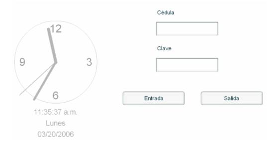

Esta opción esta directamente relacionada con el Módulo Control de Marcas. Aquí el empleado de la empresa puede marcar su hora de entrada y salida de la empresa. La manera como funciona es que el usuario digite su número de cédula y la clave (esta clave no es la de ingreso al sistema, es la clave que se definió en el mantenimiento de empleados en el campo) y luego debe de presionar el botón de Entrada o de Salida según corresponda y la marca quedará registrada con la hora del servidor, la cual es la que muestra el reloj:
